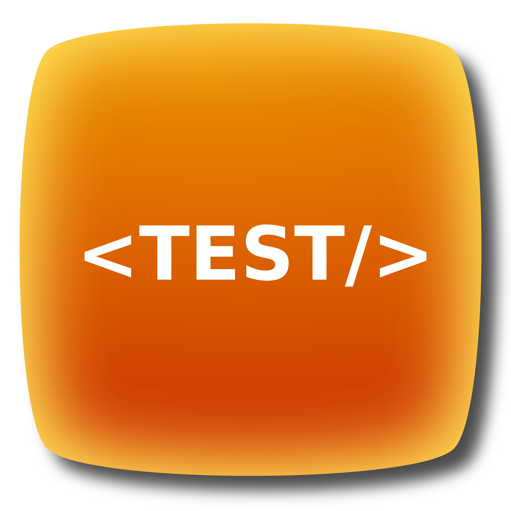

Сегодня в программировании довольно распространены модальные окна. Модальные или
всплывающие окна используются, чтобы показать последние изменения веб-страницы. Они привлекают внимание
пользователя к определенному элементу.
Самое главное преимущество модального окна это то, что оно показывает добавленную информацию без
дополнительной загрузки страницы. Оно дает пользователю соответствующую информацию в виде диалогового
окна.
Другое преимущество относится к медленной загрузке, что может привлечь внимание пользователей.
Теперь, когда мы узнали, что такое модальное окно, перейдем к его созданию.
Есть различные способы создания модального окна с помощью HTML, CSS и JavaScript.
Давайте начнем создать код шаг за шагом!
